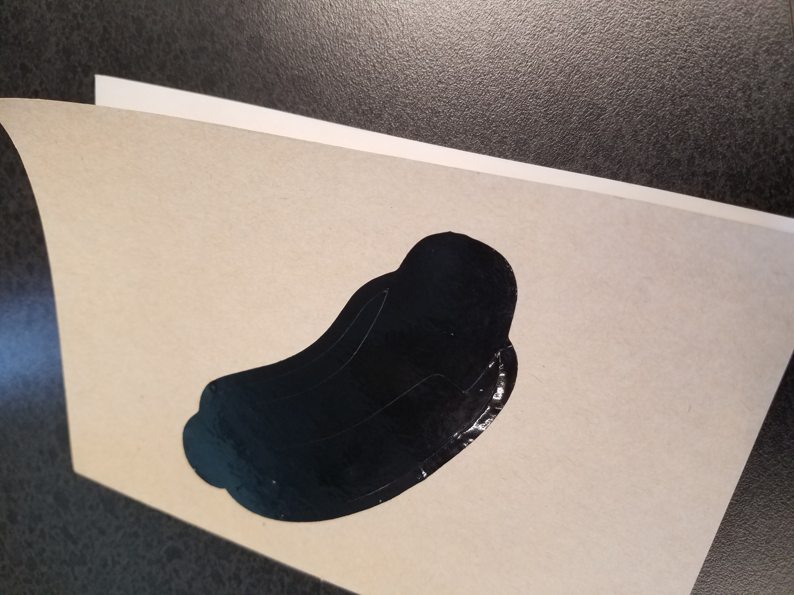
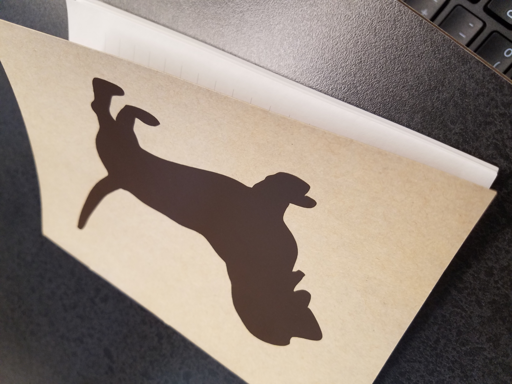
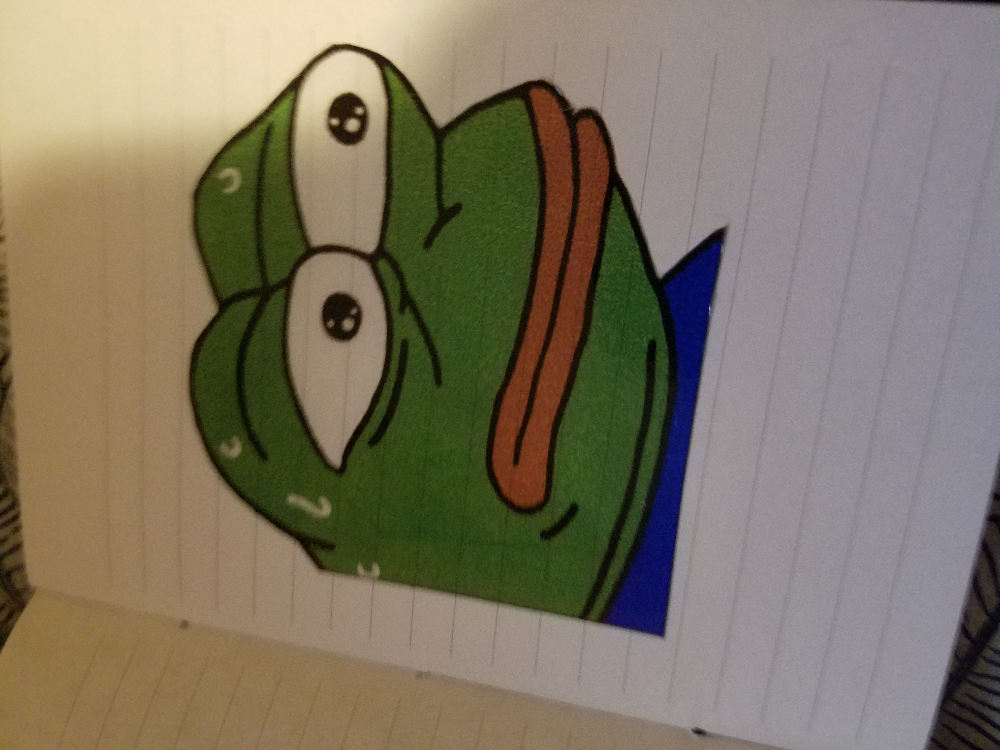
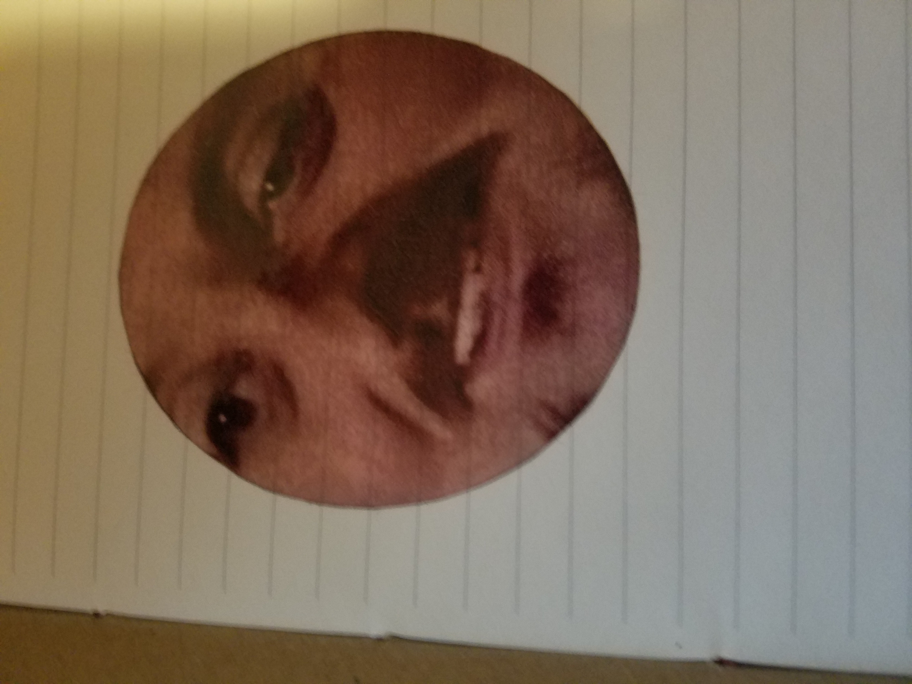
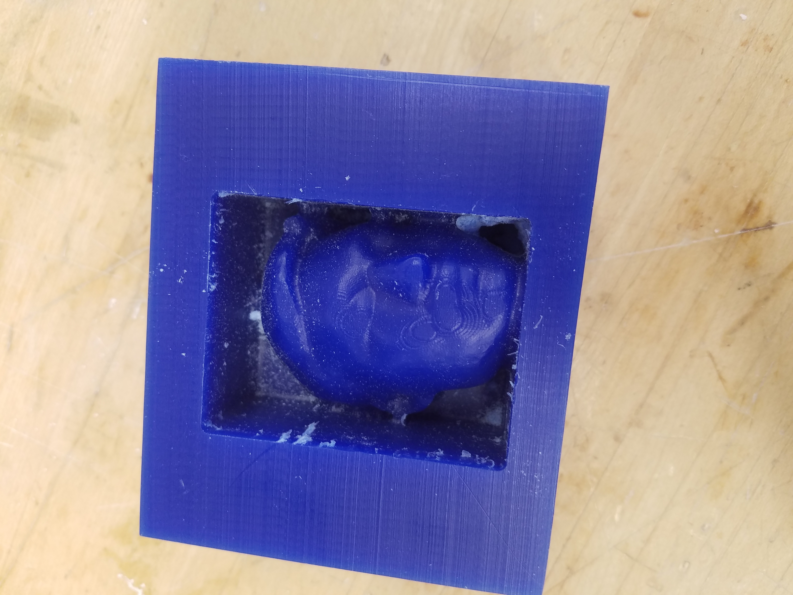
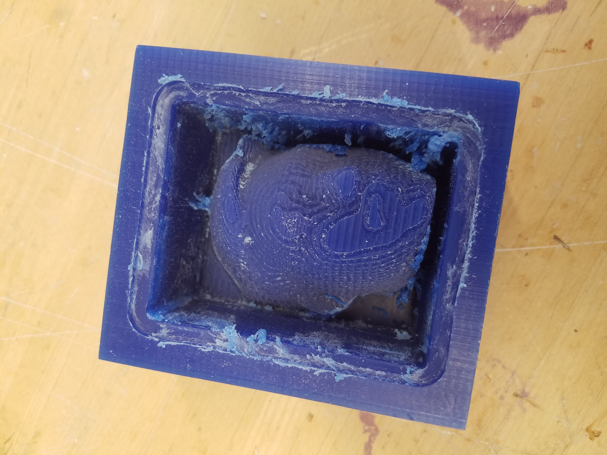
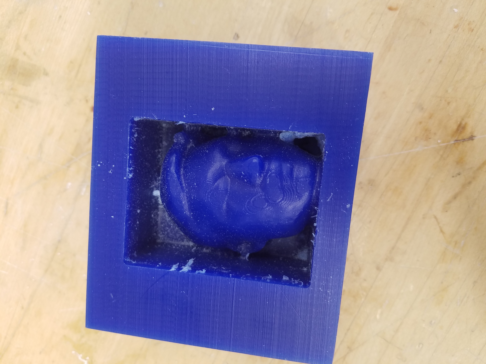
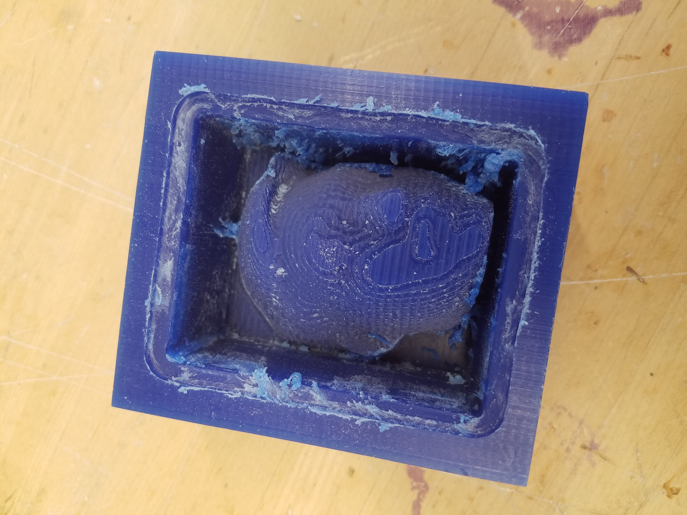
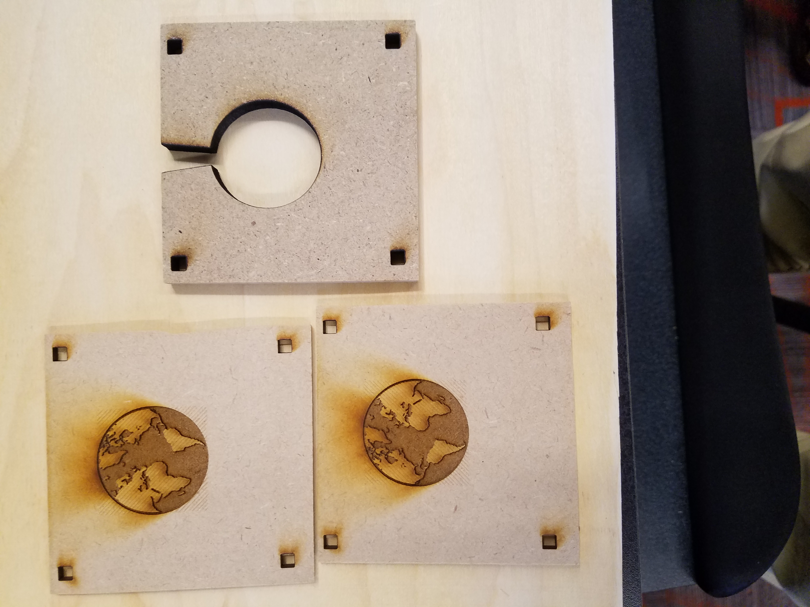
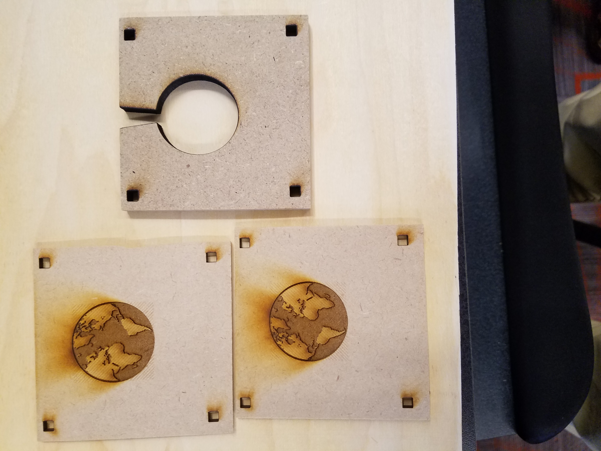

Making Vinyl Stickers
To make vinyl stickers, I first had to get to CorelDraw and import the images that I chose.
I chose a hot dog and a weiner dog shadow since vinyl stickers are in one color.
I created a line bitmap of it then got it cut out at the Roland Cutting Machine.
After that, I had to take the excess sticker off and stick transfer tape on the remaning desired sticker part.
Then I transfered the vinyl stickers over onto my notebook.
They look pretty good on the bottom.


Full Color Cut Contour Stickers
So I opened CorelDraw and made bitmaps of the two images I wanted stickers of.
Then I exported as an eps file and opened them up on the computer connected to the Roland 540i.
For the ForsenE, I powerclipped it into a circle to make a circular sticker.
I just made the shape of a MonkaS because it's cool.
I cut out around the stickers so that it looks nicer.


Molding from a Negative
I got the head scan model from the previous rotation and cut it in half.
I tilted the head a bit so that it looks cool.
I went on the milling machine and went through all the settings and steps and such.
The first mill apparently was a path thing so it looked all rough.
The second one turned out way nicer.
Below are the molds and the chocolate things.

 



Molding and Casting Pewter
...
 

File Download
Hotdog File (.cdr)
Weiner Dog File (.cdr)
MonkaS File (.eps)
ForsenE File (.eps)
Head Model for Milling File (.stl)
Mold and Pewter File (.stl)